교실 리그
이 글은 인디스쿨 소개글에서 뺀 세부 기능·점수 계산·운영 팁 전부예요.
👉 club-league.bau8584.workers.dev/school
무료 · 설치 없음 · 학생 로그인 없음 · 선생님 구글 계정 하나. 아래 화면은 전부 가명으로 바꿔 찍었어요 🐈
짧은 소개는 인디스쿨 글에 있고, 여기서는 "그래서 정확히 어떻게 돌아가는데?"에 답합니다. 순서대로 읽으셔도 되고, 필요한 데만 보셔도 돼요.
1. 시작하기 — 5분
구글 로그인 → 새 리그 개설하기. 학교 이름과 종목만 고르면 됩니다. 종목은 배드민턴·탁구·테니스·피클볼·컬링이 준비돼 있고, 그 외는 직접 입력이에요. 알까기든 팔씨름이든 이름만 넣으면 됩니다. 리그 이름·시즌은 비워 두면 알아서 채워져요.
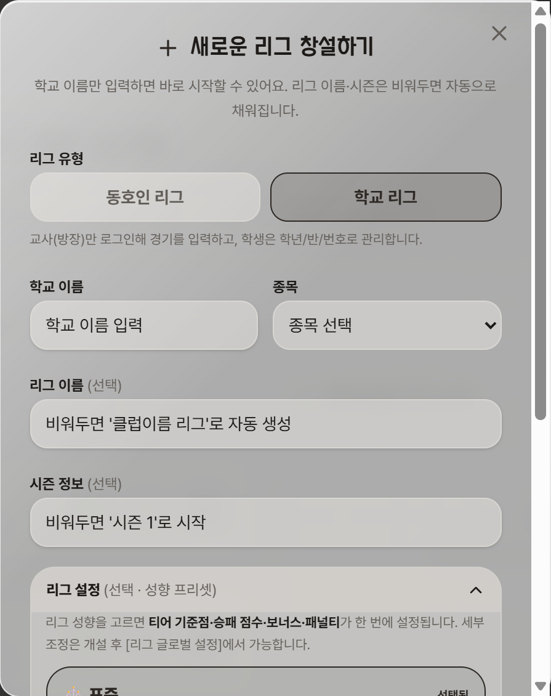
다음은 명단. 관리자 → 학생 관리 → 명단 붙여넣기에 나이스에서 복사한 걸 그대로 넣습니다. 앞에 오는 숫자 개수로 학년·반·번호를 알아서 읽어요.
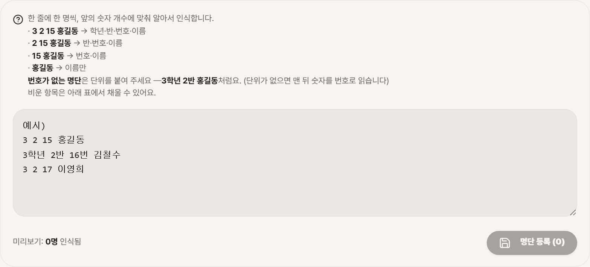
한 반만 넣어도 되고, 학년 전체·전교를 한 번에 넣어도 됩니다. 명단 구성을 보고 화면이 알아서 맞춰요 — 한 반만 있으면 학년·반 필터가 아예 안 뜨고, 반이 섞이면 반 칩이, 학년까지 섞이면 학년 칩이 생깁니다. 저는 5·6학년 500명을 리그 하나에 넣고 씁니다.
2. 수업 흐름 — 두 가지 중 골라 쓰세요
① 자유 대진. 아이들이 자기들끼리 붙고, 끝나면 태블릿에서 이름 두 개 고르고 점수를 누릅니다. 선생님은 아무것도 안 해요. 처음엔 이걸로 시작하시면 됩니다.
② 대기열. "맨날 같은 애들끼리"가 신경 쓰이면 켭니다. 수업 시작할 때 명단 바꾸기에서 반을 고르고 안 온 아이만 탭해서 빼요.
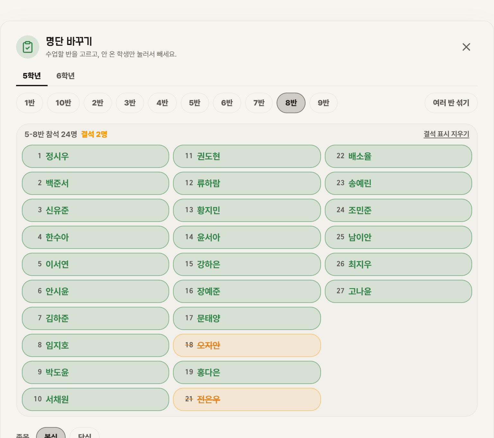
그다음 한 바퀴 버튼. 오늘 놀고 있는 아이 전원이 한 번씩 뛰도록 대진이 짜여 번호를 달고 줄을 섭니다. +1경기는 한 판만 추가.
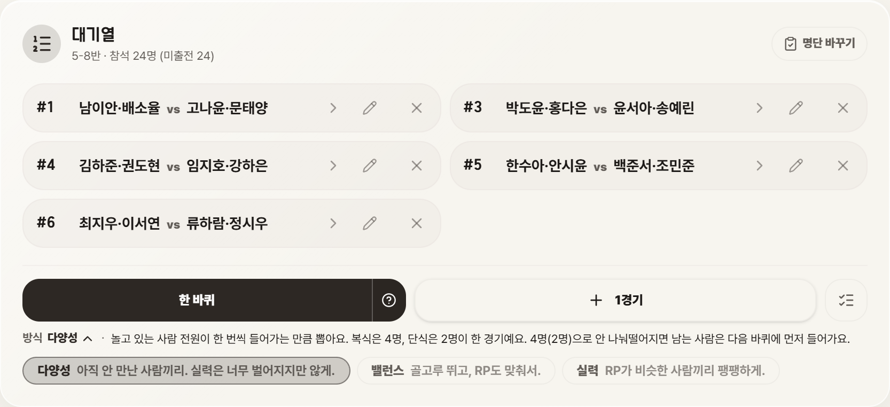
대기열의 진짜 효과는 다양성이 아니라 개입이 안 보인다는 겁니다. 소외되는 아이를 챙기려고 완성된 팀에 끼워 넣으면 "선생님이 넣어 준 애"가 되잖아요. 전부 배정되면 그게 기본값이라 아무도 챙김을 받지 않아요. 오늘 대진이 그렇게 나왔을 뿐.
경기가 끝나면 줄의 화살표(>)를 누릅니다. 두 팀 이름이 이미 채워진 채로 점수 키패드가 뜨고, 숫자만 누르면 끝.
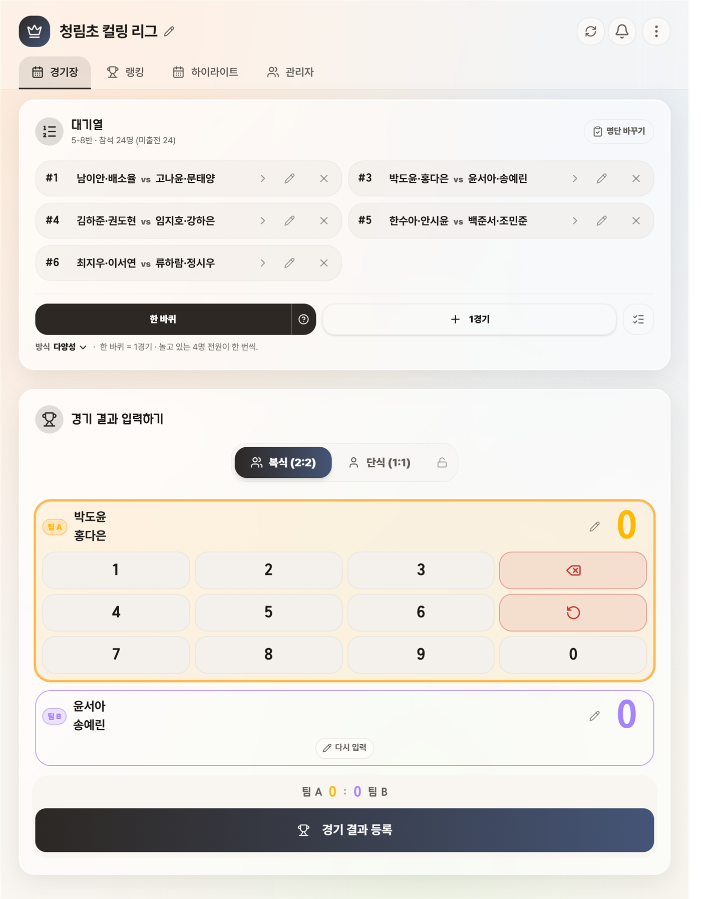
3. 교실 화면 — 아이들이 보는 순위표
관리자 → 초대에서 교실 화면 링크를 복사해 교실 태블릿·전자칠판에 띄워 둡니다. 로그인 없이 열리고, 반이 바뀌어도 주소는 그대로예요.
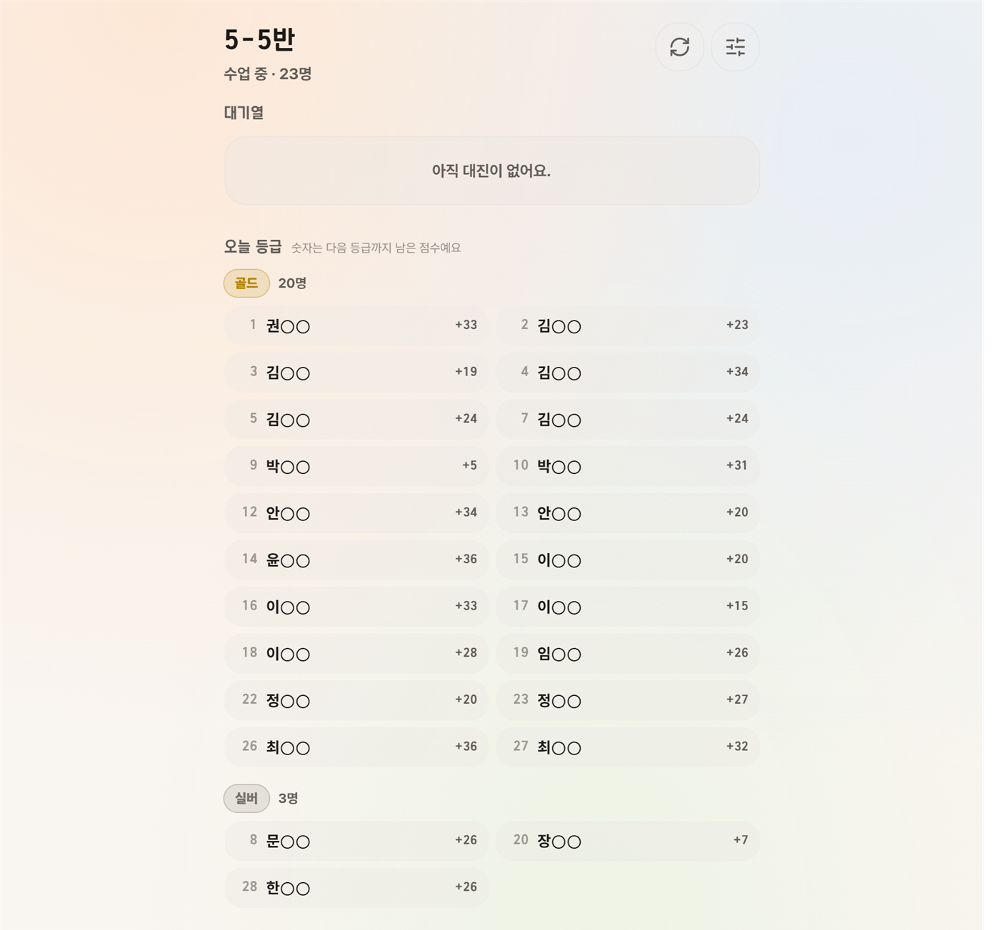
이 화면은 일부러 이렇게 만들었어요.
- 등수가 없습니다. 26명 반에서 "26등"은 태블릿 앞에 몰려선 스물여섯 명이 다 보는 꼴찌가 되니까요. 대신 골드·실버로 묶고, 다음 등급까지 남은 점수를 보여줍니다. 그건 자기 얘기고, 오늘 한 판으로 줄어들어요.
- 버튼이 없습니다. 아이가 만져도 아무 일도 안 일어나요. 교사 계정으로 로그인된 태블릿은 아이가 대진을 지울 수도 있어서, 보는 화면을 따로 뺐습니다.
- 이름이 가려집니다. "권○○". 링크를 아는 사람만 볼 수 있고요.
4. 랭킹 탭 — 티어와 언랭크
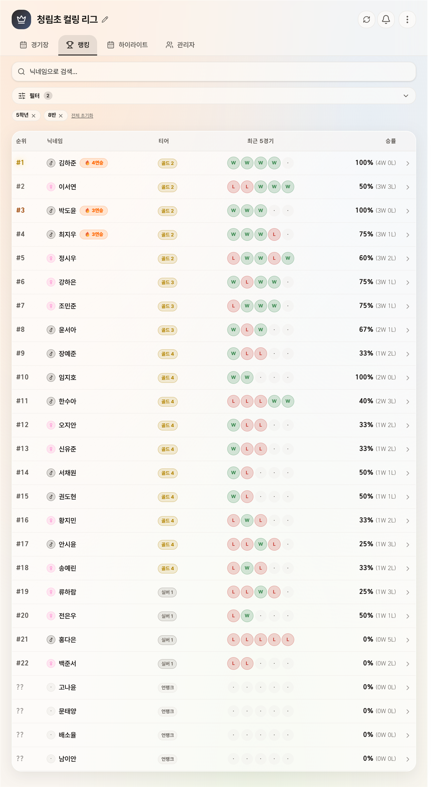
새로 들어온 아이는 언랭크로 시작해요(배치고사). 정해진 경기 수를 채우기 전까지 티어·RP가 안 보이고, 속으로만 오르내리다가 채우면 한꺼번에 공개됩니다. 첫 판 지고 "나 브론즈야" 하고 접는 걸 막으려고요. 관리자에서 끄거나 경기 수를 바꿀 수 있어요.
이름을 누르면 선수 카드. RP, 오늘 승률, 전체 승률, 최근 5경기, 전적이 나옵니다. 학부모 상담 때 "체육 시간에 이렇게 참여해요" 보여주기에 좋더라고요.
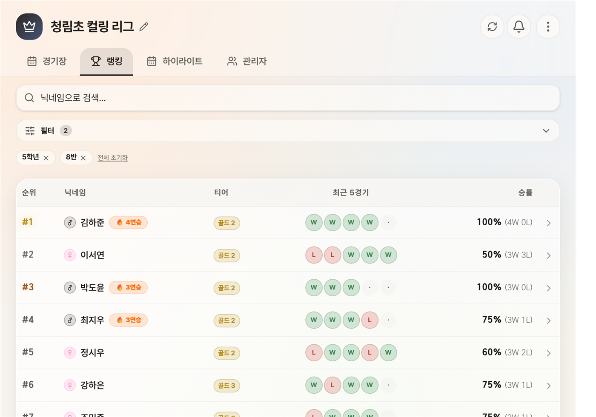
5. 점수 계산 — 이게 핵심입니다
그냥 이기면 +, 지면 −가 아니에요. 어떤 행동을 하면 점수가 더 붙는지가 교육적으로 짜여 있고, 티어마다 다르게 걸립니다. 네 축이 있어요.
① 티어 기준점 — 언제 승급하나
프리셋 4개. 리그 기간에 맞춰 고르세요. 모두 1000점에서 출발합니다.
- 🏃 단기·촘촘 — 1개월 안. 적은 경기로도 승급이 보임 (실버 900 · 골드 1050 · 플래 1200 · 다이아 1380)
- ⚖️ 표준 — 약 2개월 (870 · 1120 · 1400 · 1720)
- 🏔️ 장기·넓게 — 한 학기. 일찍 만렙 방지 (850 · 1200 · 1650 · 2200)
- 📊 정규분포·정밀 — 정확한 등급, 하위 보호·상위 넓음
② 승패 점수 — 티어마다 다릅니다
표준 기준으로 브론즈는 이기면 +24, 지면 −6. 다이아는 이기면 +11, 지면 −27. 아래는 올라가기 쉽고, 위는 지키기 어렵게. 못하는 아이는 몇 판 이기면 금방 실버가 되고, 잘하는 아이는 방심하면 떨어집니다.
- ⚖️ 표준 — 하위 친화·골드 연착륙·상위 엄격
- ⚡ 스피드 — 변동 2배. 단기 리그나 지루할 때
- 🌱 성장 — 브론즈는 져도 −2. 하위권 이탈 방지, 모두 승급 분위기
- 🎯 정밀·하드 — 상위 견제, 정확한 등급
③ 보너스 — 참여를 끌어내는 장치들
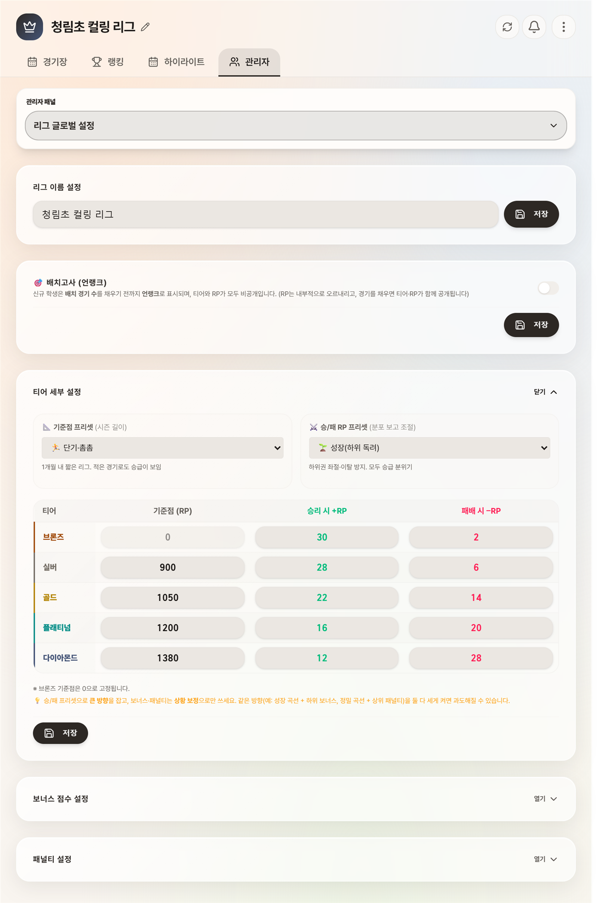
괄호 안은 표준 프리셋 값이에요.
- 👑 오늘의 첫 승 (+12) — 하루 첫 경기에서 이기면. "일단 나와서 한 판"을 만드는 장치
- ✨ 신규 매치 (+5) — 최근 5경기 안에 안 만난 상대와 붙으면. 이기든 지든. 맨날 같은 애들끼리가 저절로 풀려요
- 💪 언더독 격파 (+6/+12/+20) — 나보다 1·2·3티어 위를 이기면. 하위권이 상위권에 도전할 이유
- 🔥 복수 성공 (+8) — 최근에 진 상대에게 설욕
- ⚡ 연승 (+8) — 3연승부터. 플래티넘 이상은 꺼집니다 — 상위권이 만만한 상대만 골라 연승 쌓는 걸 막으려고
- 🏅 명승부 — 1·2·3점 차 접전은 이긴 쪽 +10/5/2, 진 쪽도 조금
- 🤗 패배 위로 (+4) — 2연패 중인 실버 이하는 져도 조금 붙어요. 골드부턴 없음
- 💎 불굴의 의지 (+8/+12/+16) — 3·4·5연패에서 탈출하면. 포기하는 아이가 없게
- ⚔️ 정상 결전 (플래 +6 / 다이아 +8) — 상위권끼리 붙어 이기면. 위에서는 이게 연승 대신
- ⚡ 상위 연승 (플래 +5 / 다이아 +6) — 상위권 전용 연승, 작게
- 🤝 캐리 (플래 +5 / 다이아 +7) — 복식에서 한 단계 이상 낮은 짝과 붙어 이기면 잘하는 쪽에. 강한 아이가 약한 아이를 끌어주게
④ 패널티 — 상위권에 무게
- 😤 오만함의 대가 (골드 −10 / 플래 −18 / 다이아 −25) — 2티어 이상 낮은 상대에게 지면
- 💥 굴욕적 완패 (−6/−9/−12) — 10점 차 이상 대패
- 👑 챔피언의 무게 (플래 −4 / 다이아 −8) — 티어가 높을수록 패배 감점이 커요. 골드는 면제
- 🌊 늪 — 연패 중 또 지면 추가 감점. 골드 3연패 −4, 다이아 3연패 −13
- 😈 복수 허용 — 내가 이겼던 상대에게 지면. 기본은 꺼져 있어요 (매주 같은 아이들이 붙는 교실에선 너무 자주 걸려서)
패널티는 전부 골드 이상에만 걸립니다. 브론즈·실버는 져도 승패 점수만 빠져요. 그리고 한동안 안 나오면 점수가 조금씩 빠지는 휴면 감점이 있어서, 초반에 올려놓고 안 하는 아이가 계속 위에 있지 않아요.
이걸 다 만질 필요는 없어요 — 번들 4개
개설할 때, 또는 나중에 관리자에서 성향 하나만 고르면 네 축이 한 번에 맞춰집니다.
- ⚖️ 표준 — 약 2개월·균형. 약간 성장형. 이걸 쓰세요
- 🎉 캐주얼·모두 행복 — 하위 독려·관대. 저학년, 이탈이 걱정될 때
- 🎯 정밀·경쟁 — 정확한 등급·상위 견제. 스포츠클럽 대회처럼 순위가 중요할 때
- 🏃 단기 이벤트 — 1개월 안 빠른 변동. 학기말 자투리 리그
6. 하이라이트 — 수업 끝나고 5분
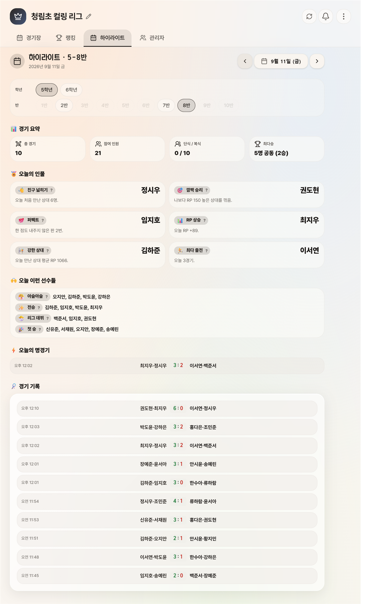
그날 경기 기록만 읽어서 상을 뽑아요. 친구 넓히기(처음 만난 상대 수), 깜짝 승리(RP 150 높은 상대 격파), 퍼펙트(한 점도 안 준 판), RP 상승, 강한 상대, 최다 출전. 한 아이가 여러 상을 휩쓸지 않게 이미 받은 아이는 다음 상에서 빼요. 전승·첫 승·리그 데뷔·아슬아슬은 해당 아이 전부 이름이 올라갑니다. 정리 활동 때 전자칠판에 띄우면 제일 시끄러운 5분이에요.
7. 시즌
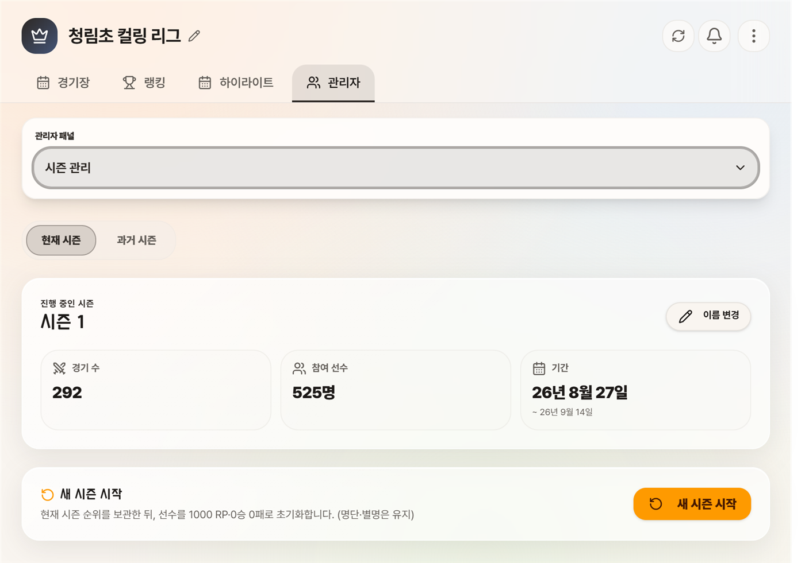
시즌을 마감하면 순위가 보관되고, 전원 1000점·0승 0패로 돌아갑니다. 명단은 그대로. 학기 리그 → 마감 → 체육대회 시즌, 이런 식으로 쓰면 돼요. 과거 시즌은 상단 시즌 선택에서 언제든 다시 봅니다.
8. 여럿이 쓰기 — 담임·전담·학년·학교
- 담임 혼자 우리 반 — 명단에 한 반만. 필터도 안 뜨고 제일 단순해요
- 체육 전담이 학년 전체 — 학년을 통째로 넣고, 수업마다 "명단 바꾸기"에서 그 반을 고르세요. 대기열·출석은 반별로 따로 굴러요
- 학년이 같이 — 관리자 → 초대 링크로 담임들을 넣으면 공동 담당이 됩니다. 같은 리그를 각자 로그인해서 관리해요
- 스포츠클럽·체육대회 — 반이 섞이면 "여러 반 섞기". 시즌을 따로 열어 대회만 정밀·경쟁 프리셋으로
9. 개인정보와 한계 — 솔직하게
- 학생 이름·번호(·성별 선택)만 들어가요. 학생 계정·가입·동의서가 없고, 아이들이 보는 화면은 이름이 가려집니다
- 1:1과 2:2만 됩니다. 피구·축구처럼 여러 명이 한 팀인 종목은 안 돼요
- 학생이 각자 폰으로 입력하는 방식이 아니에요. 태블릿 1대에서 누릅니다
- 인터넷은 있어야 해요. 교육청 차단은 아직 못 들어봤지만 한 번 확인해 보세요
- 같은 사이트에 동호회용 리그도 있어요(회원이 각자 로그인, 경기 예약·알림). 이 글은 학교 쪽만
클로드로 바이브코딩해서 만들었고, 수업하면서 계속 고치고 있어요. 코딩을 잘해서가 아니라 그냥 불편해서요 😅 이번 학년도 끝까지는 확실히 운영합니다.
써보러 가기 →구글 로그인 한 번. 명단 붙여넣고 다음 수업부터.
만드는 재미로 사는 초등쌤, 박덕구 🐈